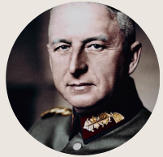
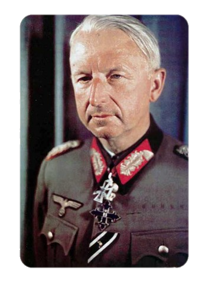

Erich von Manstein (Berlim, 24 de Novembro de 1887 — Irschenhausen, 9 de Junho
de 1973) foi um dos comandantes mais destacados da Wehrmacht, as Forças Armadas da Alemanha nazista
durante a Segunda Guerra Mundial. Von Manstein ascendeu ao posto de Generalfeldmarschall
(marechal-de-campo), e era visto como um dos melhores estrategistas militares, e um dos melhores
comandantes no terreno, da Alemanha.
Nascido numa família aristocrata da Prússia, com uma vasta tradição militar, Manstein entrou na vida
militar ainda jovem, e prestou serviço em várias frentes na Primeira Guerra Mundial. No final da
guerra, estava no posto de capitão e, no período entre guerras, participou na reconstrução das
forças armadas alemãs. Durante a invasão da Polónia, o início da Segunda Guerra, era o chefe do
Estado-maior do Grupo do Exército do Sul de Gerd von Rundstedt.
Foi o principal proponente do chamado Plano Manstein, uma ofensiva através das Ardenas durante a
invasão da França em 1940. No posto de general, no final da campanha, participou na invasão da União
Soviética e no Cerco de Sebastopol, sendo promovido a marechal-de-campo em Agosto de 1942.
O sentido auspicioso da guerra para a Alemanha começou a mudar depois da desastrosa Batalha de
Stalingrado, onde Manstein comandou uma operação de substituição fracassada. Foi um dos principais
comandantes na Batalha de Kursk, uma das últimas grandes batalhas da guerra, e uma das maiores
batalhas da história. A sua discórdia face a Adolf Hitler em relação ao rumo da guerra, valeu-lhe a
sua dispensa em Março de 1944. Nunca mais lhe foi atribuído um novo comando, e foi detido pelos
britânicos em Agosto de 1945, vários meses após a derrota alemã.
Manstein testemunhou nos Julgamentos de Nuremberg em Agosto de 1946, e preparou um documento que,
juntamente com as suas memórias, ajudou na contribuição para o mito de uma "Wehrmacht limpa" — o
mito de que as forças armadas alemãs não foram culpadas pelas atrocidades do Holocausto. Em 1949,
foi julgado em Hamburgo por crimes de guerra, e condenado a nove de 17 acusações, incluindo
maus-tratos a prisioneiros de guerra e a não ter garantido a protecção de vidas civis na sua área de
operações. A sua condenação a 18 anos de prisão foi, mais tarde, reduzida para 12, e, na prática,
passou apenas quatro anos detido, sendo libertado em 1953. Como conselheiro militar do governo da
Alemanha Ocidental em meados da década de 1950, ajudou ao restabelecimento das forças armadas.
As suas memórias, Verlorene Siege (1955), traduzidas para inglês como Lost Victories (Vitórias
Perdidas), foram muito críticas ao estilo de liderança de Hitler, e focavam-se, estritamente, nos
aspectos militares da guerra, ignorando o contexto ético e político. Manstein morreu em Munique em
1973.

Nome completo: Erich von Manstein
Nascimento: 24 de novembro de 1887
Morte: 9 de junho de 1973
Anos de serviço: 1906–1944 |
1949–1956
Patente: Marechal-de-campo
Conflitos: As duas grandes guerras
